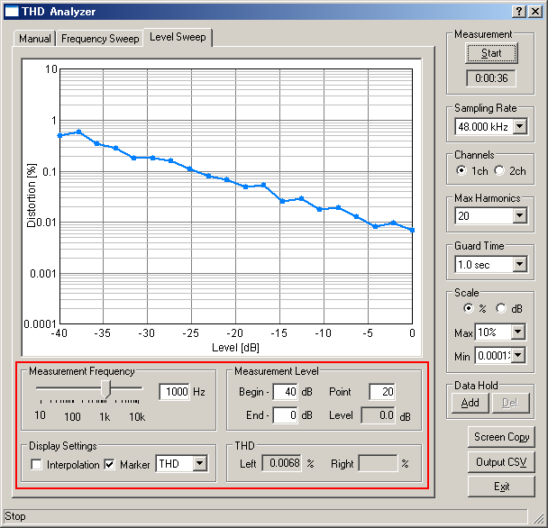

DSSF3 > RA > Reference Manual > THD Analyzer

| Item | Description |
|---|---|
| Measurement Frequency | This item sets the measurement frequency. |
| Measurement Level | Enter the Start level, the End level, and the number of points to be measured. |
| Setting | Check the Interpolation box for smoothing the distortion graph. Spline interpolation is used. |
| THD | Distortion that is currently measured is displayed. |
DSSF3 > RA > Reference Manual > THD Analyzer